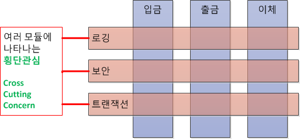

AOP (Aspect Oriented Programming : 관점 지향 프로그래밍)
어플리케이션 전체에 사용되는 기능을 재사용 하도록 지원 하도록 도와주는 것
관심의 분리 (Seperation of Concerns) 를 통하여 핵심 관심 사항 (입금, 출금, 이체) 에 집중 하는것이다.
기능을 핵식 비지니스 로직과 공통 모듈로 분리하고, 핵심 로직에 영향을 미치지 않고 사이사이에 공통 모듈을 효과적으로 잘 끼워 넣도록 코드밖에서 설정된다는 것이 핵심이다.
프로그램 파악이 힘들기 때문에 AOP 의 사용이 많을 경우에는 유지보수의 관리적인 측면이 어려움이 많다.

장점
- 중복되는 코드 제거
- 효율적인 유지보수
- 높은 생산성
- 재활용성 극대화
- 유연한 변화 수용
사용
다음은 사용 방법을 알아보자 (Spring Boot 기준)
주요개념
- Aspect
- 여러 객체에 공통으로 적용되는 횡단 관심 모듈을 정의
- Joinpoint
- Advice 를 적용 가능한 지점으로 Method 를 호출
- 필드 값 변경이 해당
- Spring 에서는 Method 호출만 지원
- Interceptor
- Interceptor Chain 방식의 AOP 툴에서 사용되는 용어로서 주로 한개의 호출 Method 를 가지는 Advice
- Advice
- 언제, 어떤 공통 관심 기능을 핵심 관심 모듈에 적용할 지를 정의
- Weaving
- Advice 를 핵심 관심 모듈에 적용하는 것을 정의
- Pointcut
- 횡단 관심 모듈이 적용될 메소드를 선정하는 방법으로 스프링에서는 정규 표현식이나 Aspect J 문법을 통해 정의
Advice 의 종류
- Before
- 대상 객체의 Method 호출 전 실행
- After Returning
- 대상 객체가
Exception없이 정상적으로 실행된 후 실행
- 대상 객체가
- After Throwing
- 대상 객체의
Exception과 상관없이 실행 finally의 기능과 비슷함
- 대상 객체의
- Around
- 대상 객체의 메서드 호출 전, 후 또는
Exception발생 시점에 실행
- 대상 객체의 메서드 호출 전, 후 또는
Example
package com.square.common.advice;
import org.aspectj.lang.JoinPoint;
import org.aspectj.lang.ProceedingJoinPoint;
import org.aspectj.lang.annotation.Before;
import org.aspectj.lang.annotation.After;
import org.aspectj.lang.annotation.AfterReturning;
import org.aspectj.lang.annotation.Around;
import org.aspectj.lang.annotation.Aspect;
import org.aspectj.lang.annotation.Pointcut;
import org.slf4j.Logger;
import org.slf4j.LoggerFactory;
import org.springframework.core.annotation.Order;
import org.springframework.stereotype.Component;
@Aspect
@Component
@Order(0)
public class LoggerAdvice {
private static final Logger logger = LoggerFactory.getLogger(LoggerAdvice.class);
@Before("execution(* com.square..controller.*Controller.*(..))")
public void logServiceAccessBefore(JoinPoint joinPoint) throws Throwable{
logger.info("Logger Advice Before");
}
@After("execution(* com.square..controller.*Controller.*(..))")
public void logServiceAccessAfter(JoinPoint joinPoint) throws Throwable{
logger.info("Logger Advice After");
}
@AfterReturning(pointcut="execution(* com.square..controller.*Controller.*(..))", returning="str")
public void logServiceAccessAfterReturning(JoinPoint joinPoint, Object str) throws Throwable{
logger.info("Returning is " + str);
logger.info("Logger Advice AfterReturning");
}
@Pointcut("execution(* com.square..controller.*Controller.*(..))")
public void logServiceAccessPointcut() {}
@Before("logServiceAccessPointcut()")
public void logServiceAccessPointcutBefore(JoinPoint joinPoint) {
logger.info("[Pointcut] Logger Advice Before");
}
@After("logServiceAccessPointcut()")
public void logServiceAccessPointcutAfter(JoinPoint joinPoint) {
logger.info("[Pointcut] Logger Advice After");
}
@AfterReturning(value="logServiceAccessPointcut()", returning="str")
public void logServiceAccessPointcutAfterReturning(JoinPoint joinPoint, Object str) {
logger.info("[Pointcut] Returning is " + str);
logger.info("[Pointcut] Logger Advice AfterReturning");
}
@Around("execution(* com.square..controller.*Controller.*(..))")
public Object logServiceAccessPointcutAround(ProceedingJoinPoint processedJoinPoint) throws Throwable {
logger.info("[Pointcut] Logger Advice Around Before");
Object obj = processedJoinPoint.proceed();
logger.info("[Pointcut] Logger Advice Around After");
return obj;
}
}
AOP 적용 대상 페이지를 호출하면 다음과 같이 로그가 남는다.
[Pointcut] Logger Advice Around Before
Logger Advice Before
[Pointcut] Logger Advice Before
[Pointcut] Logger Advice Around After
Logger Advice After
##
# 컨트롤러 로직 처리
##
[Pointcut] Logger Advice After
Returning is index
Logger Advice AfterReturning
[Pointcut] Returning is index
[Pointcut] Logger Advice AfterReturning
참고자료
https://heowc.github.io/2018/02/07/spring-boot-aop/
http://jyh1536.tistory.com/66
http://addio3305.tistory.com/86
https://jojoldu.tistory.com/27